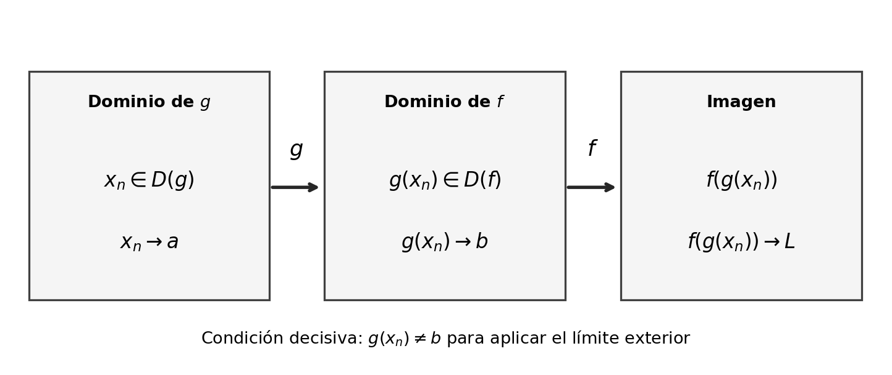
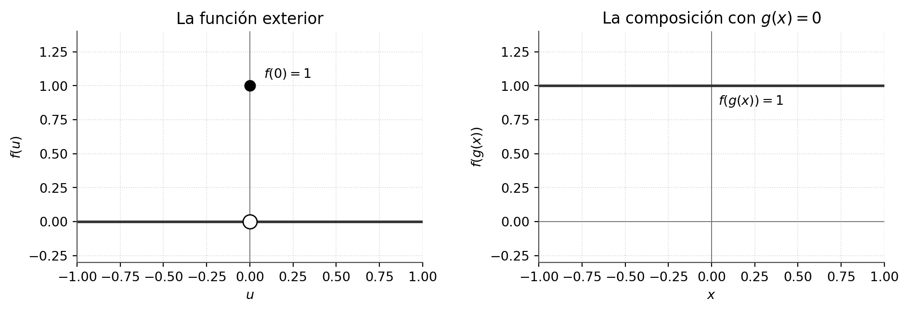
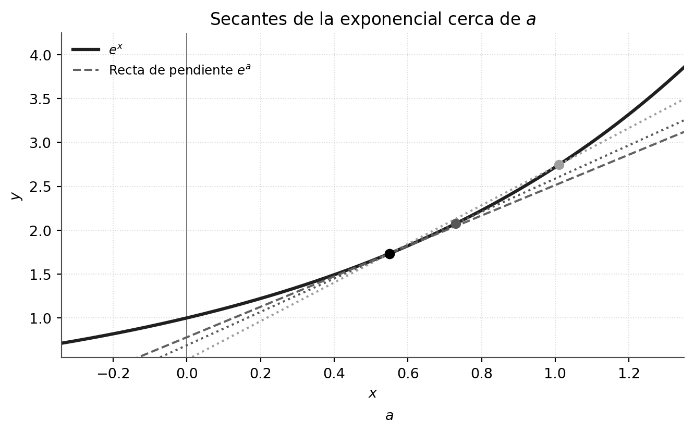
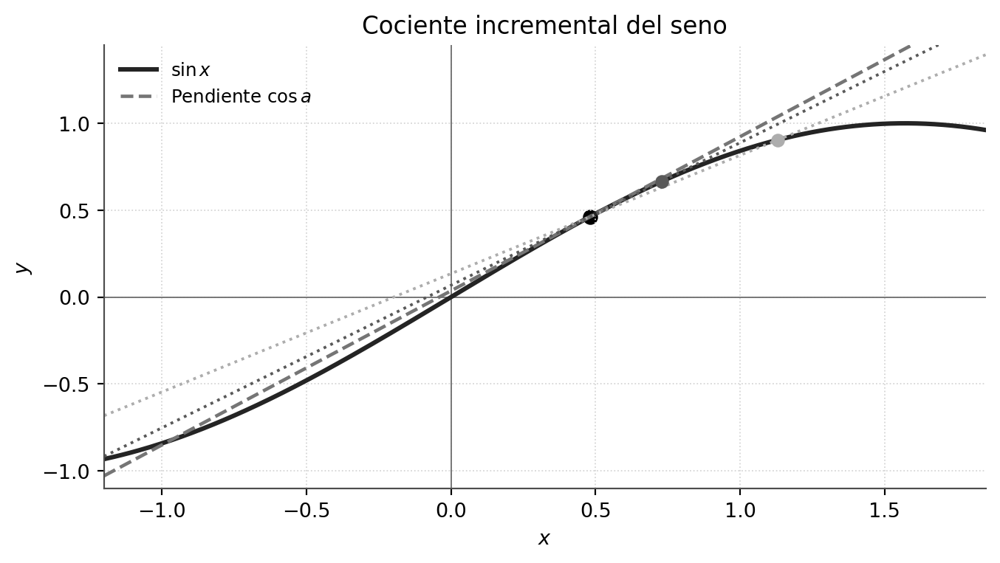
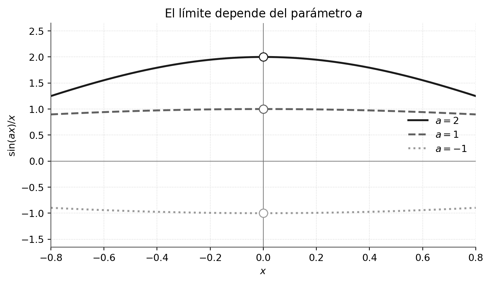
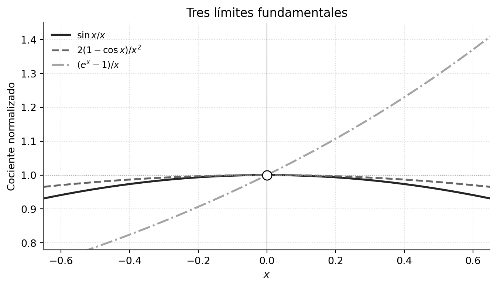
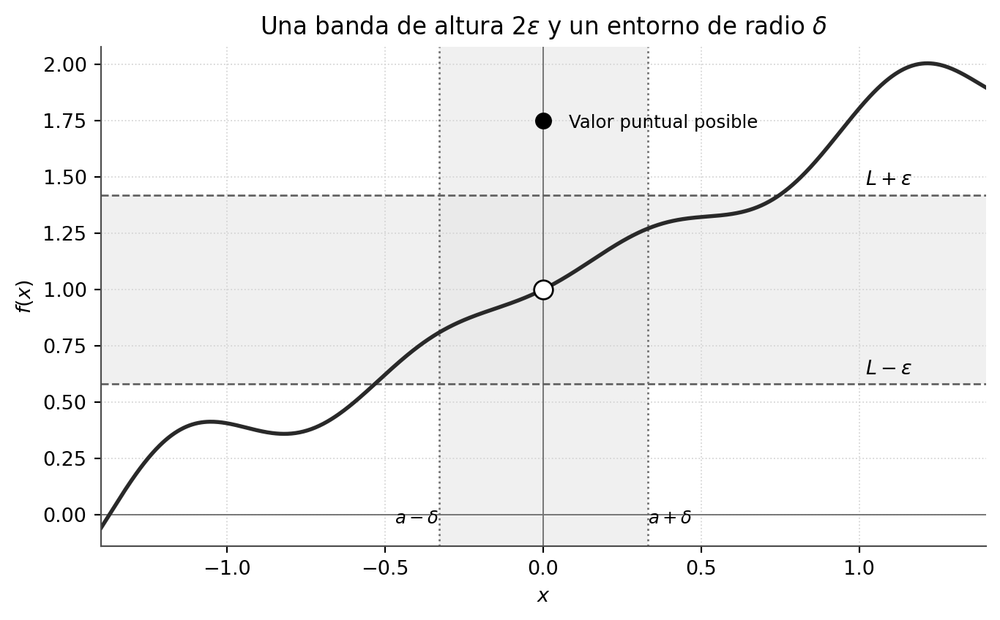
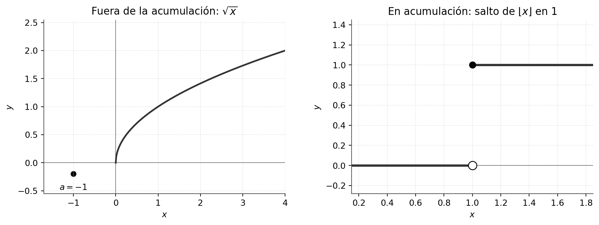

Límites de composiciones y caracterización épsilon-delta
Capítulo 15 · Parte V. Límites de funciones y cálculo diferencial
La composición permite trasladar problemas a límites ya conocidos, siempre que se verifiquen sus hipótesis. La formulación épsilon-delta aporta una segunda caracterización rigurosa de la misma noción.
Grabaciones de referencia: grabación de la cátedra 13.1.
Procedencia de este tramo: cátedra 13.1.
El límite de una composición: qué es necesario comprobar
En la clase (13:03–14:10). La operación de composición organiza el cálculo en dos etapas: la función interior \(g\) transforma la variable \(x\); la función exterior \(f\) actúa sobre \(g(x)\). Si \(x\) se aproxima a \(a\) y \(g(x)\) se aproxima a \(b\), parece natural estudiar el comportamiento de \(f(u)\) cuando \(u\) se aproxima a \(b\).
Para formular el teorema con precisión, consideramos dos funciones reales \(g:D_g\to\mathbb R\) y \(f:D_f\to\mathbb R\). Su dominio de composición es el conjunto
\[ D(f\circ g)=\{x\in D_g:g(x)\in D_f\}. \]
Definimos \(h=f\circ g\) por \(h(x)=f(g(x))\) en ese conjunto. El teorema estudia el límite de \(h\) cuando \(x\) se aproxima a un punto de acumulación \(a\) de \(D(h)\).
Teorema de composición (versión usada en la clase). Supongamos que \(a\) es punto de acumulación de \(D(f\circ g)\), que \(b\) es punto de acumulación de \(D_f\), y que:
- \(\displaystyle\lim_{x\to a}g(x)=b\) en el dominio pertinente;
- \(\displaystyle\lim_{u\to b}f(u)=L\);
- existe \(\delta_0>0\) tal que para todo \(x\in D(f\circ g)\) con \(0<|x-a|<\delta_0\) se cumple \(g(x)\ne b\).
Entonces
\[ \boxed{\displaystyle \lim_{x\to a}f(g(x))=L.} \]
El tercer requisito puede leerse como una condición de aproximación perforada de la imagen de \(g\): cerca de \(a\), los valores de \(g\) que intervienen en la composición pertenecen al dominio de \(f\) y se aproximan a \(b\) a través de puntos distintos de \(b\). Esta hipótesis cumple un papel lógico, pues la definición de límite exterior utiliza precisamente valores \(u\ne b\).

Figura 1. Esquema editorial. El argumento secuencial obliga a conservar tanto la pertenencia a los dominios como la condición \(g(x_n)\ne b\).
Demostración desarrollada
En la clase (14:11–21:44). Sea \((x_n)\) una sucesión arbitraria que satisface
\[ x_n\in D(f\circ g),\qquad x_n\ne a,\qquad x_n\longrightarrow a. \]
La condición de dominio significa simultáneamente \(x_n\in D_g\) y \(g(x_n)\in D_f\). Como \(g(x)\to b\) cuando \(x\to a\), el criterio secuencial aplicado a \(g\) establece
\[ g(x_n)\longrightarrow b. \]
La hipótesis 3 añade que, para \(n\) suficientemente grande, \(g(x_n)\ne b\). Por tanto la sucesión de imágenes \((g(x_n))\) cumple las tres condiciones necesarias para aplicar a \(f\) su límite en \(b\): pertenece a \(D_f\), converge a \(b\) y se mantiene distinta de \(b\) desde algún índice. De la segunda hipótesis se obtiene entonces
\[ f(g(x_n))\longrightarrow L. \]
Como \((x_n)\) era arbitraria, este es el criterio secuencial del límite de \(f\circ g\) en \(a\). La afirmación queda demostrada. Los primeros términos, en caso de que no satisfagan la condición de cercanía, carecen de influencia sobre la convergencia de la sucesión.
Por qué la tercera hipótesis importa
En la clase (19:30–24:55). San Martín insiste en verificar \(g(x)\ne b\) antes de sustituir una variable por otra. Una función interior puede tender a \(b\) tomando exactamente ese valor para todos los \(x\) cercanos a \(a\); entonces el comportamiento de \(f\) en el punto \(b\) podría diferir de su límite alrededor de \(b\).
Ampliación editorial — contraejemplo comprobable. Consideremos
\[ f(u)=\begin{cases}1,&u=0,\\0,&u\ne0,\end{cases} \qquad g(x)=0\quad(x\in\mathbb R). \]
Se cumplen \(\lim_{x\to0}g(x)=0\) y \(\lim_{u\to0}f(u)=0\). Sin embargo, la composición vale \(f(g(x))=1\) en todos los puntos, por lo que \(\lim_{x\to0}f(g(x))=1\). La condición 3 falla precisamente porque \(g(x)=b=0\) para todo \(x\).

Figura 2. Esquema editorial. El valor puntual de la función exterior aparece de forma persistente si la función interior toma exactamente el valor límite.
Ampliación editorial — otra versión útil. Si \(f\) es continua en \(b\) (es decir, \(f(b)\) existe y \(\lim_{u\to b}f(u)=f(b)\)), entonces se puede admitir que \(g(x)\) tome el valor \(b\): en ese caso toda sucesión \(g(x_n)\to b\) satisface \(f(g(x_n))\to f(b)\). Esta variante requiere que la continuidad de \(f\) haya sido previamente demostrada. En la clase se trabaja con la versión perforada y se deja el estudio sistemático de la continuidad para una unidad posterior.
Método de trabajo para un ejercicio
En la clase (22:08–26:29). San Martín recomienda reconocer primero la función interior, calcular a qué número tiende, comprobar explícitamente la condición adicional y, por último, calcular el límite de la función exterior en ese número. Conservar escrita la hipótesis 3 constituye una disciplina esencial de demostración.
La exponencial en un punto real arbitrario
En la clase (26:55–33:59). De la cátedra anterior se sabe que
\[ \lim_{u\to0}e^u=1, \qquad \lim_{u\to0}\frac{e^u-1}{u}=1. \]
Para estudiar \(e^x\) cuando \(x\to a\), introducimos la variable interior \(u=x-a\). Así \(u\to0\) y, además, \(x\ne a\) implica \(u\ne0\). La función exponencial satisface
\[ e^x=e^{u+a}=e^u e^a. \]
Por el límite conocido y el álgebra de límites,
\[ \boxed{\displaystyle\lim_{x\to a}e^x=e^a.} \]
Este cálculo demuestra una propiedad que más adelante recibirá el nombre de continuidad de la exponencial: su valor en el punto coincide con el límite de sus valores próximos.
El primer cociente incremental
En la clase (34:41–40:50). Al restar \(e^a\) del numerador y dividir por la diferencia de argumentos, aparece el límite
\[ \lim_{x\to a}\frac{e^x-e^a}{x-a}. \]
El cambio \(u=x-a\) produce, para \(x\ne a\),
\[ \frac{e^x-e^a}{x-a} =\frac{e^{a+u}-e^a}{u} =e^a\frac{e^u-1}{u}. \]
El último cociente tiende a \(1\). Por consiguiente,
\[ \boxed{\displaystyle\lim_{x\to a}\frac{e^x-e^a}{x-a}=e^a.} \]
El cociente mide la pendiente de la recta secante entre \((a,e^a)\) y \((x,e^x)\). Cuando \(x\) se aproxima a \(a\), esas pendientes se aproximan a \(e^a\); esta construcción será la definición formal de derivada en la siguiente unidad.

Figura 3. Esquema editorial. Las secantes convergen hacia la recta de pendiente \(e^a\) en el punto señalado.
La función seno y su cociente incremental
En la clase (41:00–44:52). El límite fundamental \(\lim_{u\to0}\sin u=0\), junto con \(\lim_{u\to0}\cos u=1\), fue establecido en la cátedra 12.2. Tomamos de nuevo \(u=x-a\) y usamos la fórmula de adición:
\[ \sin x=\sin(u+a)=\sin u\cos a+\cos u\sin a. \]
Por el álgebra de límites,
\[ \boxed{\displaystyle\lim_{x\to a}\sin x=\sin a.} \]
La misma estrategia permite obtener \(\lim_{x\to a}\cos x=\cos a\) a partir de la fórmula del coseno de una suma. Estas igualdades preparan el cálculo de cocientes incrementales.
Demostración desarrollada (44:54–55:59). Consideremos
\[ \frac{\sin x-\sin a}{x-a}. \]
Con \(u=x-a\) y la fórmula de adición,
\[ \begin{aligned} \frac{\sin(a+u)-\sin a}{u} &=\frac{\sin u\cos a+(\cos u-1)\sin a}{u}\\ &=\frac{\sin u}{u}\cos a+\frac{\cos u-1}{u}\sin a. \end{aligned} \]
El primer factor tiende a \(\cos a\) porque \(\sin u/u\to1\). El segundo cociente tiende a cero. En efecto,
\[ \frac{\cos u-1}{u} =-u\,\frac{1-\cos u}{u^2} \longrightarrow0\cdot\frac12=0. \]
Aquí se emplean, en el orden apropiado, los dos límites fundamentales ya demostrados. Por ello,
\[ \boxed{\displaystyle\lim_{x\to a}\frac{\sin x-\sin a}{x-a}=\cos a.} \]

Figura 4. Esquema editorial. El cociente incremental tiende a la pendiente \(\cos a\).
El coseno y la tangente
Ejercicios propuestos en la clase (56:00–58:57). El profesor pide calcular los cocientes correspondientes al coseno y a la tangente. Indica sus resultados: \(-\sin a\) y \(\sec^2 a\), respectivamente.
Ampliación editorial — solución del coseno. Para \(u=x-a\),
\[ \begin{aligned} \frac{\cos(a+u)-\cos a}{u} &=\cos a\,\frac{\cos u-1}{u}-\sin a\,\frac{\sin u}{u}\\ &\longrightarrow0-\sin a. \end{aligned} \]
Así,
\[ \boxed{\displaystyle\lim_{x\to a}\frac{\cos x-\cos a}{x-a}=-\sin a.} \]
Ampliación editorial — solución de la tangente. Para \(\cos a\ne0\), la tangente se define en un entorno de \(a\). Su identidad de diferencia da
\[ \tan x-\tan a=\frac{\sin(x-a)}{\cos x\cos a}. \]
Por tanto,
\[ \frac{\tan x-\tan a}{x-a} =\frac{\sin(x-a)}{x-a}\cdot\frac1{\cos x\cos a} \longrightarrow\frac1{\cos^2a}=\sec^2a. \]
El requisito \(\cos a\ne0\) es necesario para que \(\tan a\) sea un número real y para asegurar que la función esté definida cerca del punto.
La función cuadrática
En la clase (59:19–1:00:59). San Martín recuerda el cálculo elemental
\[ \frac{x^2-a^2}{x-a}=x+a\quad(x\ne a), \]
cuya convergencia cuando \(x\to a\) es \(2a\). Es la misma arquitectura de cociente incremental, resuelta aquí mediante factorización algebraica. La clase señala que la teoría sistemática de estas pendientes corresponderá a la unidad de derivadas.
Escalamiento y combinación de límites fundamentales
En la clase (1:07:07–1:13:01). Para un parámetro real fijo \(a\), se estudia
\[ \lim_{x\to0}\frac{\sin(ax)}{x}. \]
Si \(a\ne0\), hacemos \(u=ax\). Entonces \(u\to0\) cuando \(x\to0\) y \(x\ne0\) garantiza \(u\ne0\), condición adicional que el profesor exige verificar. Por consiguiente,
\[ \frac{\sin(ax)}{x}=a\frac{\sin u}{u}\longrightarrow a. \]
Si \(a=0\), el numerador es \(\sin0=0\) para todo \(x\), por lo que el cociente es la función constante \(0\) en el entorno perforado y su límite vale \(0=a\). Se obtiene, para todo \(a\in\mathbb R\),
\[ \boxed{\displaystyle\lim_{x\to0}\frac{\sin(ax)}x=a.} \]
Esta separación de casos es parte sustantiva de la clase: el resultado es uniforme en el parámetro, mientras que la demostración por sustitución requiere \(a\ne0\).

Figura 5. Esquema editorial. Para cada valor fijo de \(a\), el cociente \(\sin(ax)/x\) se aproxima a \(a\).
Dos parámetros en un cociente de senos
En la clase (1:13:04–1:15:00). Se considera \(\sin(ax)/\sin(bx)\) cuando \(x\to0\). Para \(b\ne0\), la función del denominador está definida y es distinta de cero en un entorno perforado suficientemente pequeño. Multiplicamos numerador y denominador por \(1/x\):
\[ \frac{\sin(ax)}{\sin(bx)} =\frac{\sin(ax)/x}{\sin(bx)/x}. \]
El numerador tiende a \(a\) y el denominador tiende a \(b\ne0\); el teorema del cociente proporciona
\[ \boxed{\displaystyle\lim_{x\to0}\frac{\sin(ax)}{\sin(bx)}=\frac ab\qquad(b\ne0).} \]
Un ejercicio compuesto y la lectura de la pizarra
Lectura incierta (1:15:03–1:17:59). El profesor presenta un cociente formado por un seno elevado al cubo, un factor \(1-\cos(bx)\) y un factor \(e^{cx}-1\). La transcripción automática permite recuperar la técnica de distribución de potencias de \(x\): normalizar el seno con \(x\), el término cosenoidal con \(x^2\) y la exponencial con \(x\), pero la escritura exacta del cociente compuesto y algunos símbolos no quedan acreditados por el subtitulado. La igualdad concreta siguiente es, por tanto, una ampliación editorial ejemplificadora, y no una transcripción de la expresión que aparecía en la pizarra.
Ampliación editorial — modelo de la técnica. Si \(b,c\ne0\), estudiemos
\[ R(x)=\frac{\sin^3(ax)}{(1-\cos(bx))(e^{cx}-1)}. \]
Para \(x\) cercano a cero y distinto de cero, sus factores permiten escribir
\[ R(x)=\frac{(\sin(ax)/x)^3} {\bigl((1-\cos(bx))/x^2\bigr)\bigl((e^{cx}-1)/x\bigr)}. \]
Usando los tres límites fundamentales normalizados,
\[ \lim_{x\to0}R(x)=\frac{a^3}{(b^2/2)c}=\boxed{\frac{2a^3}{b^2c}}. \]
La hipótesis \(b,c\ne0\) asegura que el denominador de este ejemplo tiene el comportamiento indicado y admite el cálculo del cociente. Si \(a=0\), el numerador es cero y el resultado sigue siendo cero. El valor exacto de la expresión original de clase queda pendiente de cotejo visual de la pizarra.

Figura 6. Esquema editorial. Los cocientes \(\sin x/x\), \(2(1-\cos x)/x^2\) y \((e^x-1)/x\) convergen a \(1\) y pueden combinarse algebraicamente.
El cociente fundamental del logaritmo
En la clase (1:18:02–1:21:30). Ahora se solicita el límite
\[ \lim_{x\to1}\frac{\ln x}{x-1}. \]
El numerador y el denominador tienden a cero, y su cociente requiere una nueva transformación. Elegimos \(u=\ln x\). Dado que \(x\to1\) por valores positivos, se tiene \(u\to0\); como \(\ln\) es inyectiva, \(x\ne1\) implica \(u\ne0\). La igualdad \(x=e^u\) permite escribir
\[ \frac{\ln x}{x-1}=\frac{u}{e^u-1} =\frac1{(e^u-1)/u}. \]
El denominador converge a \(1\), de donde
\[ \boxed{\displaystyle\lim_{x\to1}\frac{\ln x}{x-1}=1.} \]
Ampliación editorial. Para \(a>0\), un nuevo cambio \(x=a+u\) unido a la identidad \(\ln x-\ln a=\ln(x/a)\) da
\[ \boxed{\displaystyle\lim_{x\to a}\frac{\ln x-\ln a}{x-a}=\frac1a.} \]
Es una primera anticipación de la pendiente de \(\ln x\) en un punto general. Se incluye para completar el itinerario algebraico; la grabación desarrolla explícitamente el caso \(a=1\).
La caracterización épsilon-delta del límite
En la clase (1:22:01–1:30:31). San Martín explica que el límite puede formularse mediante desigualdades de distancias. El teorema reúne la cercanía horizontal de los argumentos y la cercanía vertical de las imágenes. En la exposición se dibujan franjas de altura \(2\varepsilon\) y entornos de radio \(\delta\); la demostración formal de la equivalencia con sucesiones queda anunciada como un resultado que puede desarrollarse aparte.
Caracterización épsilon-delta. Sean \(f:A\to\mathbb R\), un punto de acumulación \(a\) de \(A\) y \(L\in\mathbb R\). Entonces
\[ \boxed{\lim_{x\to a}f(x)=L\quad\Longleftrightarrow\quad \forall\varepsilon>0\ \exists\delta>0\ \forall x\in A: \bigl(0<|x-a|<\delta\bigr)\Rightarrow |f(x)-L|<\varepsilon.} \]
El cuantificador \(\forall\varepsilon>0\) expresa que la cercanía vertical solicitada puede ser tan exigente como se desee. El número \(\delta>0\) se elige en función de esa exigencia: en la parte del dominio que cumple \(0<|x-a|<\delta\), las imágenes cumplen \(L-\varepsilon<f(x)<L+\varepsilon\). El entorno es perforado, pues la aproximación utiliza puntos distintos de \(a\).

Figura 7. Esquema editorial. Para una exigencia vertical \(\varepsilon\), se encuentra un radio horizontal \(\delta\) que conserva la imagen dentro de la banda; el valor puntual de \(f(a)\) puede ocupar otra altura.
Por qué ambas definiciones coinciden
Ampliación editorial — demostración completa. Supongamos primero que se cumple la caracterización épsilon-delta. Sea \(x_n\in A\), con \(x_n\ne a\) y \(x_n\to a\). Dado \(\varepsilon>0\), elegimos el \(\delta\) de la caracterización. Como \(x_n\to a\), existe \(N\) tal que \(n\ge N\) implica \(|x_n-a|<\delta\). Entonces \(|f(x_n)-L|<\varepsilon\) para \(n\ge N\), por lo cual \(f(x_n)\to L\).
Para la implicación inversa, supongamos que toda sucesión admisible satisface \(f(x_n)\to L\). Si la condición épsilon-delta fallara, existiría un \(\varepsilon_0>0\) tal que para cada \(\delta>0\) habría un punto \(x\in A\) con
\[ 0<|x-a|<\delta, \qquad |f(x)-L|\ge\varepsilon_0. \]
Eligiendo \(\delta=1/n\), obtenemos una sucesión \(x_n\in A\) con \(0<|x_n-a|<1/n\) y \(|f(x_n)-L|\ge\varepsilon_0\) para todos los índices. Por el sándwich, \(x_n\to a\), mientras que la distancia de \(f(x_n)\) a \(L\) conserva una cota inferior positiva. Eso contradice el criterio secuencial. Así se demuestra la equivalencia.
Observación. La exigencia de que \(a\) sea punto de acumulación tiene aquí una importancia lógica: garantiza que existen puntos del dominio arbitrariamente próximos a \(a\) y distintos de él. La clase vuelve sobre este punto mediante un ejemplo de cuantificadores sobre el conjunto vacío.
Puntos de acumulación, existencia del límite y cuantificadores
En la clase (1:30:32–1:36:46). Un punto de acumulación de \(A\subseteq\mathbb R\) es un real \(a\) para el que existe una sucesión \((x_n)\) de puntos de \(A\) que converge a \(a\) y cuyos términos son todos distintos de \(a\). Esta propiedad también puede formularse así:
\[ \forall\delta>0\quad (A\setminus\{a\})\cap(a-\delta,a+\delta)\ne\varnothing. \]
La caracterización permite distinguir dos problemas matemáticos: primero, si los puntos del dominio permiten aproximarse a \(a\); segundo, si las imágenes de esos puntos convergen a un único valor. Ambos pasos son esenciales.
Ejemplo de la clase. La función \(x\mapsto\sqrt{x}\) tiene por dominio \([0,\infty)\). El punto \(-8\) se encuentra fuera del conjunto de puntos de acumulación de ese dominio: ninguna sucesión de términos no negativos puede converger a \(-8\). Por tanto, dentro de la definición adoptada en el curso, el símbolo \(\lim_{x\to-8}\sqrt{x}\) queda fuera del ámbito en que se define el límite.
Ejemplo de la clase. La parte entera \(x\mapsto\lfloor x\rfloor\) tiene dominio \(\mathbb R\), por lo que \(1\) es un punto de acumulación. Sin embargo, las sucesiones \(x_n=1-1/n\) y \(y_n=1+1/n\), tomando \(n\ge2\), producen imágenes que convergen a \(0\) y \(1\), respectivamente. Por unicidad, el límite bilateral en \(1\) no existe. En este caso el dominio admite la aproximación, pero las imágenes ofrecen dos comportamientos incompatibles con un mismo límite.

Figura 8. Esquema editorial. Son dos diagnósticos distintos: el dominio de \(\sqrt{x}\) impide aproximarse a un real negativo; el de \(\lfloor x\rfloor\) admite aproximarse a \(1\), donde sus ramas laterales tienen límites diferentes.
La sutileza del conjunto vacío
En la clase (1:37:00–1:42:31). Se estudian las dos proposiciones
\[ \forall x\in A\ P(x), \qquad \exists x\in A\ P(x). \]
Cuando \(A\) tiene algún elemento, la primera proposición implica la segunda. Para \(A=\varnothing\), la primera es verdadera por vacuidad y la segunda es falsa. La lección lógica es que el cuantificador universal describe un comportamiento de todos los elementos disponibles, mientras que el existencial acredita la presencia de al menos un elemento. Una implicación desde lo universal hacia lo existencial requiere que el conjunto sea habitado.
En el contexto del límite, exigir \(a\in A'\) (el conjunto de puntos de acumulación) asegura la existencia de puntos de \(A\) en cada entorno perforado de \(a\). Esto evita que la condición \(\forall x\in A\) se satisfaga vacíamente en una vecindad carente de puntos relevantes. De lo contrario, cualquier valor \(L\) podría satisfacer la condición épsilon-delta sin que existan datos de la función cerca del punto, lo que destruiría la unicidad del supuesto límite. Por ello la hipótesis de acumulación forma parte constitutiva del marco conceptual del curso.
En la clase (1:42:32–1:45:08). El docente anticipa que en la cátedra 13.2 se estudiarán los límites laterales. Para un punto en el extremo del dominio, como \(a=0\) para \(\sqrt{x}\), se estudia la aproximación desde los puntos que pertenecen al dominio. La existencia de aproximaciones por la derecha y por la izquierda se tratará separadamente cuando corresponda. La pregunta final de la clase subraya que cada lado debe contener puntos relevantes antes de formular un límite lateral.
Taller de problemas y soluciones
Los ejercicios se presentan a continuación según la fuente de origen; las ampliaciones editoriales de cada apuntes permanecen expresamente identificadas.
Problemas de práctica y soluciones — cátedra 13.1
Los siguientes ejercicios son ampliaciones editoriales, salvo donde se indica expresamente que San Martín propuso un cálculo durante la clase. Se distinguen aplicaciones directas, pruebas del teorema y problemas de transferencia. En cada caso deben verificarse el dominio y las hipótesis de la composición cuando se utilice.
E1. Calcular \(\lim_{x\to2}e^{3x-1}\) mediante composición.
E2. Calcular \(\lim_{x\to a}(e^{2x}-e^{2a})/(x-a)\) para \(a\in\mathbb R\).
E3. Calcular \(\lim_{x\to a}(\sin(3x)-\sin(3a))/(x-a)\).
E4. Ejercicio propuesto en la clase (56:00). Calcular \(\lim_{x\to a}(\cos x-\cos a)/(x-a)\) y explicar el signo.
E5. Ejercicio propuesto en la clase (57:37). Calcular \(\lim_{x\to a}(\tan x-\tan a)/(x-a)\) para \(\cos a\ne0\).
E6. Calcular \(\lim_{x\to0}\sin(5x)/x\) y \(\lim_{x\to0}\sin(0x)/x\) identificando cuándo se utiliza la hipótesis adicional.
E7. Calcular \(\lim_{x\to0}\sin(2x)/\sin(7x)\).
E8. Calcular \(\lim_{x\to0}\bigl[\sin^3(2x)/((1-\cos3x)(e^{4x}-1))\bigr]\).
E9. Calcular \(\lim_{x\to1}\ln x/(x-1)\) y \(\lim_{x\to2}(\ln x-\ln2)/(x-2)\).
E10. Demostrar con épsilon-delta que \(\lim_{x\to3}(2x-1)=5\).
E11. Construir dos sucesiones del dominio de \(\lfloor x\rfloor\) que converjan a \(1\) y produzcan límites de imágenes diferentes.
E12. Dados \(f(u)=1\) si \(u=0\) y \(f(u)=0\) si \(u\ne0\), y \(g(x)=0\), determinar \(\lim_{u\to0}f(u)\), \(\lim_{x\to0}g(x)\) y \(\lim_{x\to0}f(g(x))\); precisar la hipótesis incumplida.
E13. Para \(f(x)=\sqrt{x}\) y su dominio natural, decidir si \(-1\), \(0\) y \(4\) son puntos de acumulación, y calcular \(\lim_{x\to0}\sqrt{x}\).
Soluciones comprobadas
E1. Para \(g(x)=3x-1\), \(g(x)\to5\) cuando \(x\to2\), y si \(x\ne2\) entonces \(g(x)\ne5\). La exponencial tiene límite \(e^5\) en \(5\). Resultado: \(\boxed{e^5}\).
E2. Usamos \(u=2(x-a)\) y factorizamos \(e^{2a}\):
\[ \frac{e^{2x}-e^{2a}}{x-a} =2e^{2a}\frac{e^{u}-1}{u}\longrightarrow\boxed{2e^{2a}}. \]
E3. Con \(u=3(x-a)\),
\[ \frac{\sin(3x)-\sin(3a)}{x-a} =3\frac{\sin(3a+u)-\sin(3a)}u\longrightarrow\boxed{3\cos(3a)}. \]
E4. Por la fórmula de adición,
\[ \frac{\cos(a+u)-\cos a}{u} =\cos a\frac{\cos u-1}{u}-\sin a\frac{\sin u}{u} \longrightarrow\boxed{-\sin a}. \]
El signo procede de la fórmula \(\cos(a+u)=\cos a\cos u-\sin a\sin u\).
E5. La diferencia de tangentes produce
\[ \frac{\tan x-\tan a}{x-a} =\frac{\sin(x-a)}{x-a}\cdot\frac1{\cos x\cos a} \longrightarrow\boxed{\sec^2 a},\quad\cos a\ne0. \]
E6. El primer límite vale \(5\) al escribir \(u=5x\). El segundo cociente es idénticamente cero para \(x\ne0\), y su límite vale \(0\). En el segundo caso, la sustitución \(u=0x\) incumple \(u\ne0\); la evaluación directa del cociente resuelve el ejercicio.
E7. Los dos cocientes normalizados por \(x\) tienden a \(2\) y \(7\), respectivamente. Como el segundo límite es distinto de cero, el resultado es \(\boxed{2/7}\).
E8. Se usan el cubo del seno normalizado, el coseno normalizado por \(x^2\) y la exponencial normalizada por \(x\):
\[ \lim=\frac{2^3}{(3^2/2)\cdot4}=\boxed{\frac49}. \]
E9. El primer resultado es \(\boxed{1}\), por \(u=\ln x\). El segundo se reduce a \(\ln(x/2)=\ln(1+(x-2)/2)\) y al cociente fundamental, por lo que el resultado es \(\boxed{1/2}\).
E10. Sea \(\varepsilon>0\) y elijamos \(\delta=\varepsilon/2\). Para todo \(x\in\mathbb R\) con \(0<|x-3|<\delta\),
\[ |(2x-1)-5|=2|x-3|<2\delta=\varepsilon. \]
Por la definición, \(\boxed{\lim_{x\to3}(2x-1)=5}\).
E11. Tomamos \(x_n=1-1/(n+1)\) y \(y_n=1+1/(n+1)\), ambos distintos de \(1\) y convergentes a \(1\). Se cumple \(\lfloor x_n\rfloor=0\) y \(\lfloor y_n\rfloor=1\). Así, el límite bilateral en \(1\) no existe.
E12. Se obtiene \(\lim_{u\to0}f(u)=0\), \(\lim_{x\to0}g(x)=0\) y \(\lim_{x\to0}f(g(x))=1\). La función interior toma exactamente su valor límite en todos los puntos; por ello falla la condición adicional \(g(x)\ne b\) del teorema de composición.
E13. El conjunto de puntos de acumulación de \([0,\infty)\) es \([0,\infty)\): \(0\) y \(4\) son puntos de acumulación y \(-1\) queda fuera. Para \(x_n\ge0\) con \(x_n\to0\), se tiene \(\sqrt{x_n}\to0\) porque \(\sqrt{x_n}\ge0\) y, para \(\varepsilon>0\), eventualmente \(x_n<\varepsilon^2\) implica \(\sqrt{x_n}<\varepsilon\). Por ello \(\boxed{\lim_{x\to0}\sqrt{x}=0}\), con aproximaciones restringidas al dominio.
Este capítulo pertenece a la edición temática no oficial del curso IC2021. Índice del libro · Fuentes y concordancia.